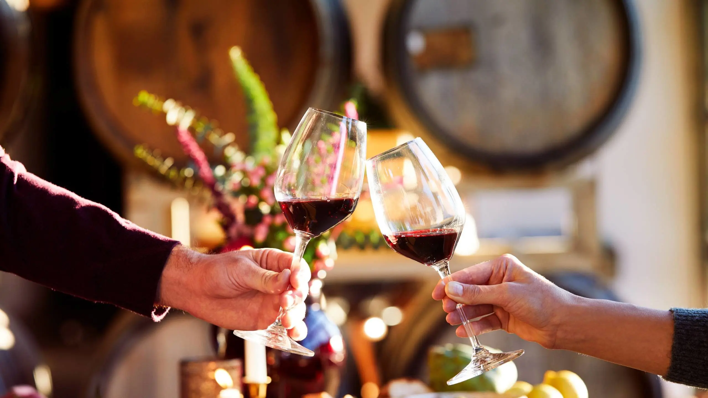
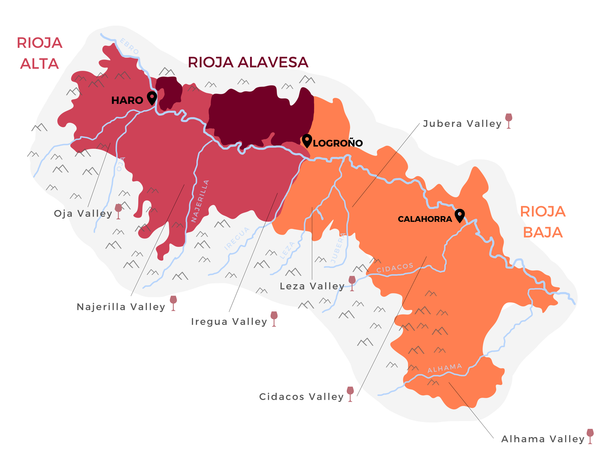
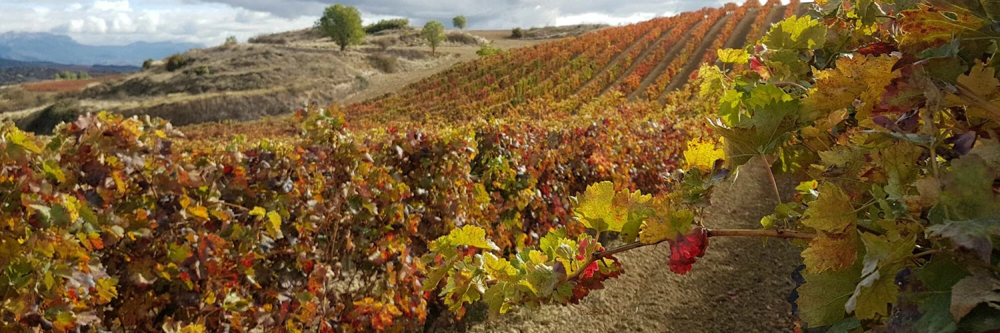

Rioja
Rioja is today Spain´s most famous wine region. Rioja (or “Rioha”, the way Rioja would be pronounced in English) is the first name that will come up to any wine lover´s name when they think about Spain. Why is this the case? Well, Rioja wines offer excellent value for money and consistent quality. What we have said about foreigners would also apply to Spaniards if they are asked to name one wine region. They may prefer wine from another wine region in Spain (there are over 60 wine regions in Spain!) but most people asked would still refer to Rioja as their first option.

Rioja Three Zones, A Thousand Wines
The Denominación de Origen Calificada Rioja is in the north of Spain, on both sides of the River Ebro. It is dived into three large zones: Rioja Alta, Rioja Alavesa and Rioja Oriental. With more than 65,000 hectares of vineyard, each town and terroir has its own personality, making Rioja a unique land.

Rioja's Vineyards
Although Rioja's vineyards focus very strongly on producing wines in the regional style, and for sale under the Rioja DO appellation title, other styles of wine are also produced here. The most notable of these, and perhaps the most unexpected, are sparkling wines – not something with which Rioja is often associated. However, certain parts of the region are officially authorized to produce Cava. A few dessert wines are also produced on a commercial scale from both red and white grape varieties. These hark back to traditional wines called Supurados, dried in lofts over the winter.
